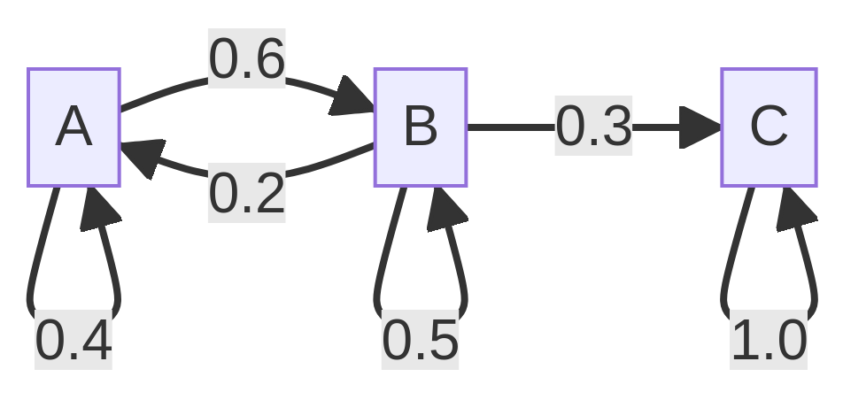
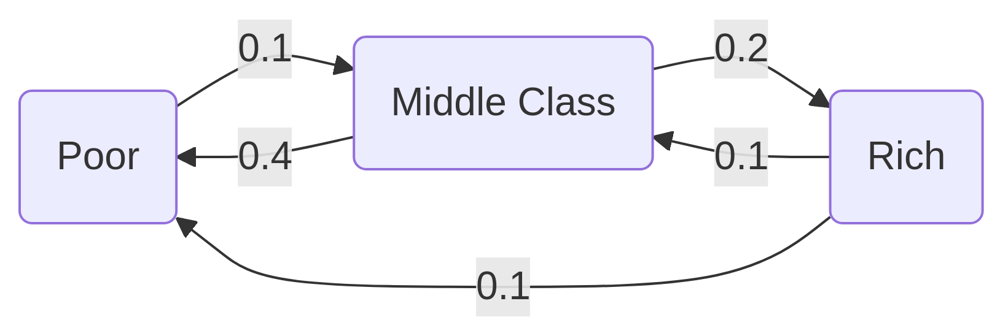
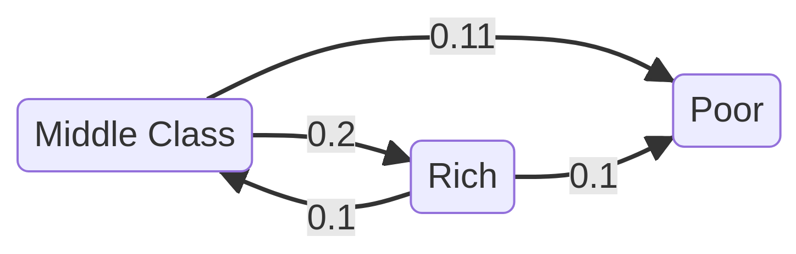
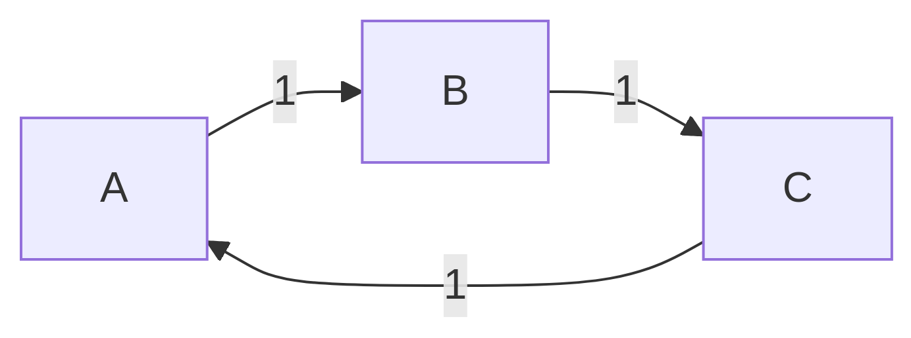
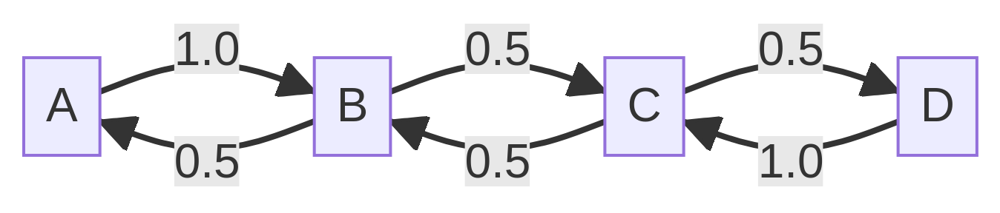

Discrete Dynamic Programming
Computational Economics (ECO309)
Pablo Winant
2024-03-28
Introduction
The imperialism of Dynamic Programming
— Recursive Macroeconomic Theory (Ljunqvist & Sargent)
I spent the Fall quarter (of 1950) at RAND. My first task was to find a name for multistage decision processes. An interesting question is, “Where did the name, dynamic programming, come from?” The 1950s were not good years for mathematical research. We had a very interesting gentleman in Washington named Wilson. He was Secretary of Defense, and he actually had a pathological fear and hatred of the word “research”. I’m not using the term lightly; I’m using it precisely. His face would suffuse, he would turn red, and he would get violent if people used the term research in his presence. You can imagine how he felt, then, about the term mathematical. The RAND Corporation was employed by the Air Force, and the Air Force had Wilson as its boss, essentially. Hence, I felt I had to do something to shield Wilson and the Air Force from the fact that I was really doing mathematics inside the RAND Corporation. What title, what name, could I choose? In the first place I was interested in planning, in decision making, in thinking. But planning, is not a good word for various reasons. I decided therefore to use the word “programming”. I wanted to get across the idea that this was dynamic, this was multistage, this was time-varying. I thought, let’s kill two birds with one stone. Let’s take a word that has an absolutely precise meaning, namely dynamic, in the classical physical sense. It also has a very interesting property as an adjective, and that is it’s impossible to use the word dynamic in a pejorative sense. Try thinking of some combination that will possibly give it a pejorative meaning. It’s impossible. Thus, I thought dynamic programming was a good name. It was something not even a Congressman could object to. So I used it as an umbrella for my activities.
— Richard Bellman, Eye of the Hurricane: An Autobiography (1984, page 159)
Markov chain and Markov process
Markov chain and Markov process
- Stochastic process: family of random variables indexed by time
- A stochastic process has the Markov property if its future evolution depends only on its current state.
- Special cases:
| Discrete States | Continuous States | |
|---|---|---|
| Discrete Time | Discrete Markov Chain | Continuous Markov Chain |
| Continuous Time | Markov Jump Process | Markov Process |
Stochastic matrices
- a matrix \(M \in R^n\times R^n\) matrix is said to be stochastic if
- all coefficents are non-negative
- all the lines lines sum to 1 (\(\forall i, \sum_j M_{ij} = 1\))
- a probability density is a vector \(\mu \in R^n\) such that :
- all components are non-negative
- all coefficients sum to 1 (\(\sum_{i=1}^n \mu_{i} = 1\))
- a distribution is a vector with such that:
- all components are non-negative
Simulation
Consider: \(\mu_{i,t+1}' =\mu_t' P\)
We have \(\mu_{i,t+1} = \sum_{k=1}^n \mu_{k,t} P_{k, i}\)
And: \(\sum_i\mu_{i,t+1} = \sum_i \mu_{i,t}\)
Postmultiplication by a stochastic matrix preserves the mass.
Interpretation: \(P_{ij}\) is the fraction of the mass initially in state \(i\) which ends up in \(j\)
Example
\[\underbrace{ \begin{pmatrix} ? & ? & ? \end{pmatrix} }_{\mu_{t+1}'} = \underbrace{ \begin{pmatrix} 0.5 & 0.3 & 0.2 \end{pmatrix} }_{\mu_t'} \begin{pmatrix} 0.4 & 0.6 & 0.0 \\\\ 0.2 & 0.5 & 0.3 \\\\ 0 & 0 & 1.0 \end{pmatrix}\]
Graphical Representation:
Probabilistic interpretation
- Denote by \(S=(s_1,...s_n)\) a finite set with \(n\) elements (\(|S|=n\)).
- A Markov Chain with values in \(S\) and with transitions given by a stochastic matrix \(P\in R^n\times R^n\) identfies a stochastic process \((X_t)_{t\geq 0}\) such that \[P_{ij} = Prob(X_{t+1}=s_j|X_t=s_i)\]
- In words, line \(i\) describes the conditional distribution of \(X_{t+1}\) conditional on \(X_t=s_i\).
What about longer horizons?
It is easy to show that for any \(k\), \(P^k\) is a stochastic matrix.
\(P^k_{ij}\) denotes the probability of ending in \(j\), after \(k\) periods, starting from \(i\)
Given an initial distribution \(\mu_0\in R^{+ n}\)
- Which states will visited with positive probability between t=0 and t=k?
- What happens in the very long run?
We need to study a little bit the properties of Markov Chains
Connectivity
Two states \(s_i\) and \(s_j\) are connected if \(P_{ij}>0\)
We call incidence matrix: \(\mathcal{I}(P)=(\delta_{P_{ij}>0})_{ij}\)
Two states \(i\) and \(j\) communicate with each other if there are \(k\) and \(l\) such that: \((P^k)_ {i,j}>0\) and \((P^l)_ {j,i}>0\)
- it is an equivalence relation
- we can define equivalence classes
A stochastic matrix \(P\) is irreducible if all states communicate
- there is a unique communication class
Connectivity and irreducibility
Irreducible

Irreducible: all states can be reached with positive probability from any initial state.
Not irreducible

- Here there is a subset of states (poor), which absorbs all the mass coming in.
Aperiodicity
- Are there cycles? Starting from a state \(i\), how long does it take to return to \(i\)?
- The period of a state is defined as \[gcd( {k\geq 1 | (P^k)_{i,i}>0} )\]
- If a state has a period d>1 the chain returns to the state only at dates multiple of d.
Aperiodicity
Periodic

- If you start from some states, you return to it, but not before two periods.
Aperiodic

- If some mass leaves a state, some of it returns to the state in the next period.
Stationary distribution
\(\mu\) is a stationary distribution if \(\mu' = \mu' P\)
Theorem: there always exists such a distribution
- proof: Brouwer theorem (fixed-point result for compact-convex set)
- \(f: \mu\rightarrow (\mu'P)'\)
Theorem:
- if P is irreducible the fixed point \(\mu^{\star}\) is unique
- if P is irreducible and aperiodic \(|\mu_0' P^k - \mu^{\star}| \underset{k\to+\infty}{\longrightarrow}0\) for any initial distribution \(\mu_0\)
We then say the Markov chain is ergodic
\(\mu^{\star}\) is the ergodic distribution
- it is the best guess, one can do for the state of the chain in the very far future
Stationary distribution (proof)
- Brouwer’s theorem: Let \(\mathcal{C}\) be a compact convex subset of \(R^n\) and \(f\) a continuous mapping \(\mathcal{C}\rightarrow \mathcal{C}\). Then there exists a fixed point \(x_0\in \mathcal{C}\) such that \(f(x_0)=x_0\)
- Result hinges on:
- continuity of \(f: \mu \mapsto \mu P\)
- convexity of \(\\{x \in R^n | |x|=1 \\}\) (easy to check)
- compactness of \(\\{x \in R^n | |x|=1 \\}\)
- it is bounded
- and closed (the inverse image of 1 for \(u\mapsto |u|\) which is continuous)
Stationary distribution?
How do we compute the stationary distribution?
- Simulation
- Linear algebra
- Decomposition
Simulating a Markov Chain
- Very simple idea:
- start with any \(\mu_0\) and compute the iterates recursively
- \(\mu_{n+1}' = \mu_n' P\)
- convergence is linear:
- \(|\mu_{n+1} - \mu_n| \leq |P| |\mu_n - \mu_{n-1}|\)
Using Linear Algebra
- Find the solution of \(\mu'(P-I) = 0\) ?
- not well defined, 0 is a solution
- we need to incorporate the constraint \(\sum_i(\mu_i)=1\)
- Method:
- Define \(M_{ij} = \begin{cases} 1 &\text{if} & j =0 \\\\ (P-I)_{ij} & \text{if} & j> 1 \end{cases}\)
- Define \(D_i = \begin{cases} 1 & \text{if} & j = 0 \\\\0 & \text{if} & j>0 \end{cases}\)
- With a linear algebra solver
- look for a solution \(\mu\) of \(\mu' M = D\)
- or \(M^{\prime} \mu = D\prime\)
- if you find a solution, it is unique (theorem)
- Alternative:
- minimize residual squares of overidentified system
Code example
# we use the identity matrix and the \ operator
using LinearAlgebra: I, \
# define a stochastic matrix (lines sum to 1)
P = [ 0.9 0.1 0.0 ;
0.05 0.9 0.05 ;
0.0 0.9 0.1 ]
# define an auxiliary matrix
M = P' - I
M[end,:] .= 1.0
# define rhs
R = zeros(3)
R[end] = 1
# solve the system
μ = M\R
# check that you have a solution:
@assert sum(μ) == 1
@assert all(abs.(μ'P - μ').<1e-10)Further comments
- Knowledge about the structure of the Markov Chain can help speedup the calculations
- There are methods for potentially very-large linear system
- Newton-Krylov based methods, GMRES
- Basic algorithms are easy to implement by hand
- QuantEcon toolbox has very good methods to study markov chains
Dynamic Programing: notations
Consider the following problems:
Monopoly pricing:
\[\max_{q} \pi(q) - c(q)\]
Shopping problem
\[\max_{\substack{c_1, c_2 \\ p_1 c_1 + p_2 c_2 \leq B}} U(c_1,c_2)\]
Consumption Savings
\[\max_{\substack{c() \\ w_{t+1}=(w_t-c(w_t))(1+r)) + y_{t+1}}} E_0 \sum_t \beta^t U(c(w_t))\]
| Problem | objective | action | state | transition | type |
|---|---|---|---|---|---|
| monopoly pricing | profit | choose quantity to produce | optimization | ||
| shopping problem | utility | choose consumption composition | budget \(B\) | comparative statics | |
| consumption/savings | expected welfare | save or consume | available income | evolution of wealth | dynamic optimization |
General Formulation
Markov Decision Problem
-
Environment
- states: \(s \in S\)
- actions: \(x \in X(s)\)
- transitions: \(\pi(s'| s, x) \in S\)
- \(probability\) of going to \(s'\) in state \(s\)…
- … given action \(x\)
-
Reward: \(r(s,x) \in R\)
- aka felicity, intratemporal utility
-
Policy: \(x(): s \rightarrow x\in X(s)\)
- a.k.a. decision rule
- we consider deterministic policy
- given \(x()\), the evolution of \(s\) is a Markov process
- \(\pi(. |s, x())\) is a distribution for \(s'\) over \(S\)
- it depends only on \(s\)
Objective
- expected lifetime reward:
- value of following policy \(x()\) starting from \(s\): \[R(s; x()) = E_0 \sum_t^T \delta^t \left[ r_t\right]\]
- \(\delta \in [0,1[\): discount factor
- horizon: \(T \in \\{N, \infty\\}\)
- value of a state \(s\)
- value of following the optimal policy starting from \(s\) \[V(s) = \max_{ x()} R(s, x())\]
- \(V()\) is the value function (t.b.d.)
Classes of Dynamic Optimization
- The formulation so far is very general. It encompasses several variants of the problem:
- finite horizon vs infinite horizon
- discrete-space problem vs continuous-state space problem
- some learning problems (reinforcement learning…)
- There are also variants not included:
- non time-separable problems
- non time-homogenous problems
- some learning problems (bayesian updating, …)
Finite horizon vs infinite horizon
- Recall objective: \(V(s; x()) = \max E_0\sum_{t=0}^T \delta^t \left[ r(s_t, x_t) \right]\)
- If \(T<\infty\), the decision in the last periods, will be different from the periods before
- one must find a decision rule \(\pi_t()\) per period
- or, equivalently, add \(t\) to the state space: \(\tilde{S}=S\times[0,T]\)
- If \(T=\infty\), the continuation value of being in state \(s_t\) is independent from \(t\)
\[V(s; x()) = E_0 \max \sum_ {t=0}^{T_0} \delta^t \left[ r(s_t, x_t) \right] + \delta^{T_0} E_0 \sum_ {t=T_0}^{\infty} \delta^t \left[ r(s_t, x_t) \right]\]
\[ = E_0 \left[ \max \sum_ {t=0}^{T_0} \delta^t \left[ r(s_t, x_t) \right] + \delta^{T_0} V(s_ {T_0}; x()) \right]\]
Continuous vs discrete
- Discrete Dynamic Programming (today)
- discrete states: \(s \in {s_1, \cdots, s_N}\)
- discrete controls: \(|X(s)|<\infty\)
- there is a finite number of policies, the can be represented exactly
- unless \(|S|\) is very large (cf go game)
- Continuous problem:
- \(x(s)\), \(V(s; \pi)\) require an infinite number of coefficients
- same general approach but different implementation
- two main variants:
- discretize the initial problem: back to DDP
- use approximation techniques (i.e. interpolation)
Non time separable example
- For instance Epstein-Zin preferences: \[\max V(;c())\] where \[V_t = (1-\delta) \frac{c_t^{1-\sigma}}{1-\sigma} + \delta \left[ E_t V_{t+1}^{\alpha} \right]^{\frac{1}{\alpha}}\]
- Why would you do that?
- to disentangle risk aversion and elasticity of intertemporal substitution
- robust control
- You can still use ideas from Dynamic Programming.
Non homogenous preference
Look at the \(\alpha-\beta\) model. \[V_t = \max \sum_t^{\infty} \beta_t U(c_t)\] where \(\delta_0 = 1\), \(\delta_1=\alpha\), \(\delta_k=\alpha\beta^{k-1}\)
Makes the problem time-inconsistent:
- the optimal policy you would choose for the continuation value after \(T\) is not the same if you maximize it in expectation from \(0\) or at \(T\).
Learning problems
- Bayesian learning: Uncertainty about some model parameters
- ex: variance and return of a stock market
- agent models this uncertainty as a distribution
- agent updates his priors after observing the result of his actions
- actions are taken optimally taken into account the revelation power of some actions
- Is it good?
- clean: the rational thing to do with uncertainty
- super hard: the state-space should contain all possible priors
- mathematical cleanness comes with many assumptions
- Used to estimate rather big (mostly linear) models
Learning problems (2)
- Reinforcement learning
- model can be partially or totally unknown
- decision rule is updated by observing the reward from actions
- no priors
- solution does not derive directly from model
- can be used to solve dynamic programming problems
- Good solutions maximize a criterion similar to lifetime reward but are usually not optimal:
- usually evaluated by replaying the game many times
- tradeoff exploration / exploitations
Finite horizon DMDP
Finite horizon DMDP
When \(T<\infty\). With discrete action the problem can be represented by a tree.

Finite horizon DMDP
- Intuition: backward induction.
- Find optimal policy \(x_T(s_T)\) in all terminal states \(s_T\). Set \(V_T(s_T)\) equal to \(r(s_T, \pi_T)\)
- For each state \(s_{k-1}\in S\) find \(x_{k-1}\in X(s_{k-1})\) which maximizes \[V_{k-1}(s_{k-1}) = \max_{x_{k-1}(s_{k-1})\in X(s_{k-1})}r(s_{k-1},x_{k-1}) + \delta \underbrace{ \sum_{s_k\in S} \pi(s_k | s_{k-1}, x_{k-1} ) V_k(s_k)} _{ \textit{expected continuation value} }\]
- Policies \(x_0(), ... x_T()\) are Markov-perfect:
- they maximize utility on all subsets of the “game”
- also from t=0
Remarks
- Can we do better than this naive algorithm?
- not really
- but we can try to limit \(S\) to make the maximization step faster
- exclude a priori some branches in the tree using knowledge of the problem
Infinite horizon DMDP
Infinite horizon DMDP
- Horizon is infinite: \[V(s) = \max E_0 \sum_{t=0}^{\infty} \delta^t r(s_t, x_t) \]
- Intuition:
- let’s consider the finite horizon version \(T<\infty\) and \(T >> 1\)
- compute the solution, increase \(T\) until the solution doesn’t change
- in practice: take an initial guess for \(V_{T}\) then compute optimal \(V_{T-1}\), \(V_{T_2}\) and so on, until convergence of the \(V\)s
Infinite horizon DMDP (2)
- This is possible, it’s called Successive Approximation or Value Function Iteration
- how fast does it converge? linearly
- can we do better? yes, quadratically
- with howard improvement steps
Successive Approximation
- Consider the decomposition: \[V(s; x()) = E_0 \sum_{t=0}^{\infty} \delta^t r(s_t, x_t) = E_0 \left[ r(s, x(s)) + \sum_{t=1}^{\infty} \delta^t r(s_t, x_t) \right]\]
or
\[V(s; x()) = r(s, x(s)) + \delta \sum_{s'} p(s'|s,x(s)) V(s'; x()) \]
Successive Approximation (2)
- Taking continuation value as given we can certainly improve the value in every state \(\tilde{V}\) by choosing \(\tilde{x}()\) so as to maximize \[\tilde{V}(s; \tilde{x}(), x()) = r(s, \tilde{x}(s)) + \delta \sum_{s'} \pi(s'|s,\tilde{x}(s) )V(s'; x()) \]
- By construction: \(\forall s, \tilde{V}(s, \tilde{x}(), x()) > {V}(s, x())\)
- it is an improvement step
- Can \({V}(s, \tilde{x}())\) be worse for some states than \({V}(s, x())\) ?
- actually no
Bellman equation
- Idea:
- it should not be possible to improve upon the optimal solution.
- Hence the optimal value \(V\) and policy \(x^{\star}\) should satisfy: \[\forall s\in S, V(s) = \max_{y(s)} r(s, y(s)) + \delta \sum_{s^{\prime}\in S} \pi(s^{\prime}| s, y(s)) V(s^{\prime})\] with the maximum attained at \(x(s)\).
- This is referred to as the Bellman equation.
- Conversely, it is possible to show that a solution to the Bellman equation is also an optimal solution to the initial problem.
Bellman operator
- The function \(G\) is known as the Bellman operator: \[G: V \rightarrow \max_{y(s)} r(s, y(s)) + \delta \sum_{s^{\prime}\in S} \pi(s^{\prime}| s, y(s)) V(s^{\prime})\]
- Define sequence \(V_n = G(V_{n-1})\)
- it goes back in time
- but is not the time-iteration operator
- Optimal value is a fixed point of G
- Does \(G\) converges to it ? Yes, if \(G\) is a contraction mapping.
Blackwell’s theorem
- Let \(X\subset R^n\) and let \(\mathcal{C}(X)\) be a space of bounded functions \(f: X\rightarrow R\), with the sup-metric. \(B: \mathcal{C}(X)\rightarrow \mathcal{C}(X)\) be an operator satisfying two conditions:
- (monotonicity) if \(f,g \in \mathcal{C}(X)\) and \(\forall x\in X, f(x)\leq g(x)\) then
- (discounting) there exists some \(\delta\in]0,1[\) such that: \(B.(f+a)(x)\leq (B.f)(x) + \delta a, \forall f \in \mathcal{C}(X), a\geq 0, x\in X\)
- Then \(B\) is a contraction mapping with modulus \(\delta\).
Successive Approximation
Using the Blackwell’s theorem, we can prove the Bellman operator is a contraction mapping.
This justifies the Value Function Iteration algorithm:
- choose an initial \(V_0\)
- given \(V_n\) compute \(V_{n+1} = G(V_n)\)
- iterate until \(|V_{n+1}- V_n|\leq \eta\)
Policy rule is deduced from \(V\) as the maximand in the Bellman step
Successive Approximation (2)
Assume that \(X\) is finite.
- Note that convergence of \(V_n\) is geometric
- But \(x_n\) converges after a finite number of iteration.
- surely the latest iterations are suboptimal
- they serve only to evaluate the value of \(x\)
- In fact:
- \(V_n\) is never the value of \(x_n()\)
- should we try to keep both in sync?
Policy iteration for DMDP
- Choose initial policy \(x_0()\)
- Given initial guess \(x_n()\)
- compute the value function \(V_n=V( ;x_n)\) which satisfies
\(\forall s, V_n(s) = r(s, x_n(s)) + \delta \sum_{s'} \pi(s'| s, x_n(s)) V_n(s')\) - improve policy by maximizing in \(x_n()\) \[\max_{x_n()} r(s, x_n(s)) + \delta \sum_{s^{\prime}\in S} \pi(s^{\prime}| s, x_n(s)) V_{n-1}(s^{\prime})\]
- compute the value function \(V_n=V( ;x_n)\) which satisfies
- Repeat until convergence, i.e. \(x_n=x_{n+1}\)
- One can show the speed of convergence (for \(V_n\)) is quadratic
- it corresponds the Newton-Raphson steps applied to \(V\rightarrow G(V)-V\)
How do we compute the value of a policy?
Given \(x_n\), goal is to find \(V_n(s)\) in \[\forall s, V_n(s) = r(s, x_n(s)) + \delta \sum_{s'} \pi(s'| s, x_n(s)) V_n(s')\]
Three approaches:
- simulate the policy rule and compute \(E\left[ \sum_t \delta^t r(s_t, x_t) \right]\) with Monte-Carlo draws
- successive approximation:
- put \(V_k\) in the rhs and recompute the lhs \(V_{k+1}\), replace \(V_k\) by \(V_{k+1}\) and iterate until convergence
- solve a linear system in \(V_n\)
For 2 and 3 it is useful to constuct a linear operator \(M\) such that \(V_{n+1} = R_n + \delta M_n . V_n\)
Example : the McCall Model
Idea
- McCall model:
- when should an unemployed person accept a job offer?
- choice between:
- wait for a better offer (and receive low unemp. benefits)
- accept a suboptimal job offer
- We present a variant of it, with a small probability of loosing a job.
Formalization
- When unemployed in date, a job-seeker
- consumes unemployment benefit \(c_t = \underline{c}\)
- receives in every date \(t\) a job offer \(w_t\)
- \(w_t\) is i.i.d.,
- takes values \(w_1, w_2, w_3\) with probabilities \(p_1, p_2, p_3\)
- if job-seeker accepts, becomes employed at rate \(w_t\) in the next period
- else he stays unemployed
- When employed at rate \(w\)
- worker consumes salary \(c_t = w\)
- with small probability \(\lambda>0\) looses his job:
- starts next period unemployed
- otherwise stays employed at same rate
- Objective: \(\max E_0 \left\{ \sum \beta^t \log(w_t) \right\}\)
States / reward
- What are the states?
- employement status: Unemployed / Employed
- if Unemployed:
- the level \(w\in {w_1, w_2, w_3}\) of the salary that is currently proposed
- if Employed:
- the level \(w\in {w_1, w_2, w_3}\) at which worker was hired
- current state, can be represented by a 2x3 index
- What are the actions?
- if Unemployed:
- reject (false) / accept (true)
- if Employed: None
- actions (when unemployed) are represented by a 3 elements binary vector
- if Unemployed:
- What is the (intratemporal) reward?
- if Unemployed: \(U(c)\)
- if Employed at rate w: \(U(w)\)
- here it doesn’t depend on the action
Value function
\(\newcommand{\E}{\mathbb{E}}\)
What is the value of being in a given state?
If Unemployed, facing current offer \(w\):
\[V^U(w) = U(\underline{c}) + \max_{a} \begin{cases} \beta V^E(w) & \text{if $a(w)$ is true} \\ \beta E_{w'}\left[ V^U(w^{\prime}) \right] & \text{if $a(w)$ is false} \end{cases}\]If Employed, at rate \(w\) \[V^E(w) = U(w) + (1-\lambda) \beta V^E(w) + \lambda \beta E_{w'}\left[ V^U(w^{\prime}) \right] \]
We can represent value as two functions \(V^U\) and \(V^E\) of the states as
- two vectors of Floats, with three elements (recall: value-function is real valued)
Value function iteration
- Take a guess for value function \(\tilde{V^E}\), \(\tilde{V^U}\), tomorrow
- Use it to compute value function today: \[V^U(w) = U(\underline{c}) + \max_{a(w)} \begin{cases} \beta \tilde{V}^E(w) & \text{if $a(w)$ is true} \\ \beta E_{w'}\left[ \tilde{V}^U(w^{\prime}) \right] & \text{if $a(w)$ is false} \end{cases}\] \[V^E(w) = U(w) + (1-\lambda) \beta \tilde{V}^E(w) + \lambda \beta E_{w'}\left[\tilde{V}^U(w^{\prime}) \right] \]
- \((\tilde{V}^E, \tilde{V}^U)\mapsto (V^E, V^U)\) is one value iteration step
- Note that we don’t have to keep track of policies tomorrow
- all information about future decisions is contained in \(\tilde{V}^E, \tilde{V}^U\)
- but we can keep track of current policy: \(a(w): \arg\max \cdots\)
Value evaluation
- Suppose we take a policy \(a(w)\) as given. What is the value of following this policy forever?
- The value function \(V_a^E\), \(V_a^U\) satisfies \[V_a^U(w) = U(\underline{c}) + \begin{cases} \beta {V}^E_a(w) & \text{if $a(w)$ is true} \\ \beta E_{w'}\left[ {V}^U_a(w^{\prime}) \right] & \text{if $a(w)$ is false} \end{cases}\] \[V_a^E(w) = U(w) + (1-\lambda) \beta {V}^E_a(w) + \lambda \beta E_{w'}\left[{V}^U_a(w^{\prime}) \right] \]
- Note the absence of the max function: we don’t reoptimize
Value evaluation (2)
- How do you compute value of policy \(a(w)\) recursively?
- Iterate: \((\tilde{V}^E_a, \tilde{V}^U)\mapsto (V^E_a, V^U_a)\) \[V_a^U(w) \leftarrow U(\underline{c}) + \begin{cases} \beta \tilde{V}^E_a(w) & \text{if $a(w)$ is true} \\ \beta E_{w'}\left[ \tilde{V}^U_a(w^{\prime}) \right] & \text{if $a(w)$ is false} \end{cases}\] \[V_a^E(w) \leftarrow U(w) + (1-\lambda) \beta \tilde{V}^E_a(w) + \lambda \beta E_{w'}\left[\tilde{V}^U_a(w^{\prime}) \right] \]
- Note the absence of the max function:
- we don’t reoptimize
- we we keep the same policy all along
Policy iteration
- start with policy \(a(w)\)
- evaluate the value of this policy \(V^E_a, V^U_a\)
- compute the optimal policy \(a(w)\) in the Bellman iteration
- here: \(a(w) = \arg\max_{a(w)} \begin{cases} \beta \tilde{V}^E(w)\\ \beta E_{a'}\left[ \tilde{V}^U(a^{\prime}) \right] \end{cases}\)
- iterate until \(a(w)\) converges